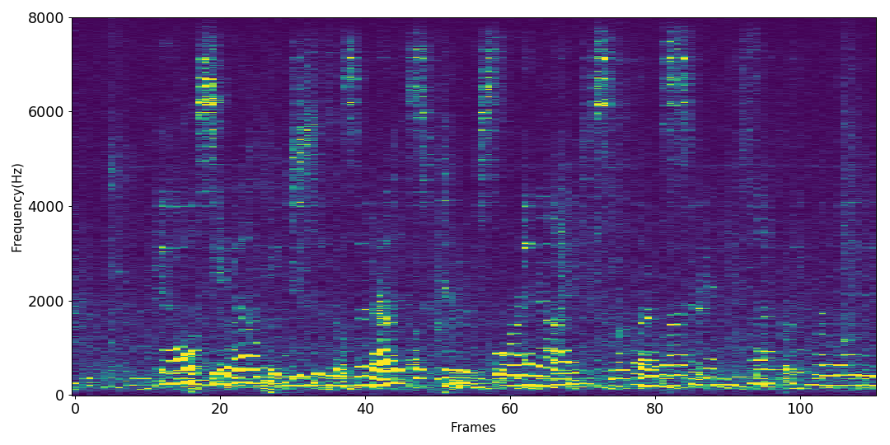
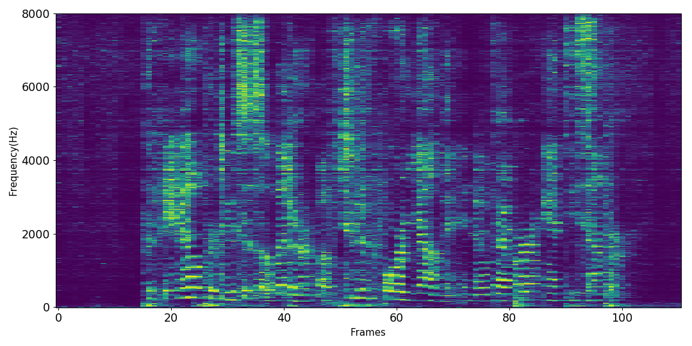
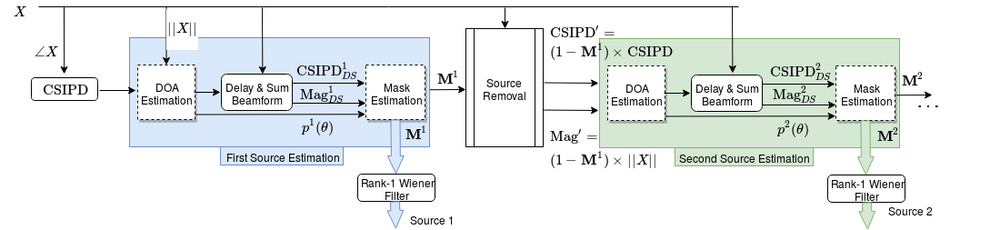

Localization guided speech separation
November 28th, 2019

Supervisors : Emmanuel Vincent, Inria, France Dominique Fohr, Loria, France
Problem overview

Sources of noise in a typical home


Speaker localization given the spoken text

Source separation given localization information, $\theta$

Source separation given localization information, $\theta$

Results
Speaker Localization
Results
Speech Separation (in % WER )
Baseline
| Single Speaker |
Single Speaker + noise |
2 speakers + noise |
|---|---|---|
| 12.5 | 25.5 | 66.5 |
After separation
| True DOA (Proposed) |
Est DOA (witd GCC-PHAT) |
Deflation (Proposed) |
Conv-Tasnet |
| 35.0 | 54.5 | 44.2 | 53.2 |